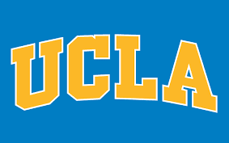

Machine learning has been a domain of the experts and we wanted infinite perspectives, infinite ways to thing, infinite ways we can outsource thinking itself. So I thought of moving this power from specialists to generalists. In the pursuit of this, I started making a global foundation of sorts to start working on democratizing machine learning. It is a decade long project starting June 2021 and involves researchers across Stanford, UCSD, RWTH aachen, the deepmind.ai team. The genesis of the project started with the interactions we had with bell labs fellows and the pioneers in the field of statistics and machine learning. They also wanted to bring it to the fore, if the field is being developed at such a rapid pace we wanted everyone to contribute and move from mainframes to the era of personal computing. So, we wanted started working on systems and a platform to make it accessible to gather data using spyders and crawlers even for IoT data in register based circuits by connecting at the exit node and finding patterns, the later works involve using adversarial networks for generating more data out of this small supply, and expanding the scope of the project to include space and biomarker data points. The project then enables laymen to use machine learning tools to create whatever they want, that is literally create whatever kind of mind they want to create by changing neural arrangements, nural architectures, stacking up different systems viz. memory, decision making, tracking markers to know how different parts are using this data that can be figured out using tools being developed in the explainable machine learning domain. It is a moonshot, but one worth pursuing. Research scholars across UCSD, UCLA, Stanford, Max-planck institute and student clubs across all these institutes and Tsinghua university are working on the goal of democratising data science.
Democratizing machine learning
Machine learning has been a domain of the experts and we wanted infinite perspectives, infinite ways to thing, infinite ways we can outsource thinking itself. So I thought of moving this power from specialists to generalists. In the pursuit of this, I started making a global foundation of sorts to start working on democratizing machine learning. It is a decade long project starting June 2021 and involves researchers across Stanford, UCSD, RWTH aachen, the deepmind.ai team.